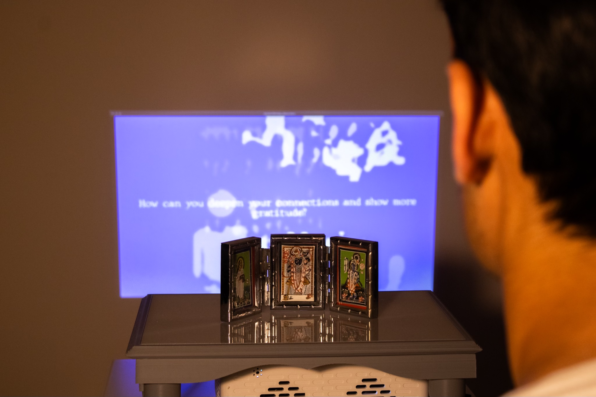
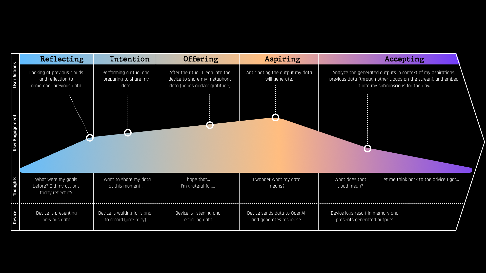
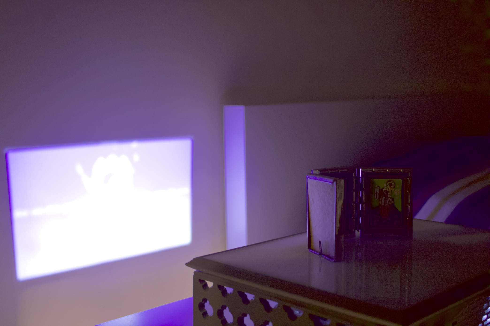
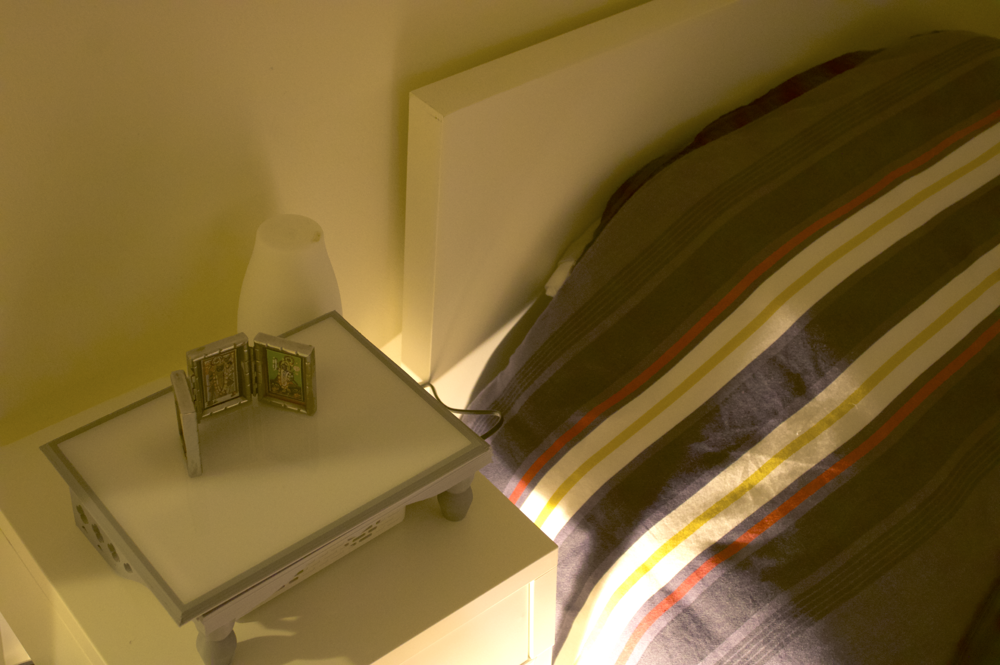

A mixed-reality cloud watching experience that visualizes our daily reflections as shifting clouds in a sky.
Under the karma philosophy, which places people at the center of their own actions, this
device acts as a method for people to record, acknowledge, and reflect on their aspirations
and gratitudes over time as a passive display using generative AI.

Agami karma, the futures that are generated by the choices of your current actions.
This was built around my spiritual practice of prayer by my bedside table, where I place
deity idles. It involves affirmations, reflections, and aspirations throughout times of the
day. By verbalizing my thoughts, I intend to act on them throughout the day. This cloud
watching experience visualizes that data into an physical scene.



Leveraging AI to generate multi-faceted responses based on a single speech input.
Using OpenAI, the model is trained to act as a reflective guru, detecting specific
vocabulary keywords (hope, grateful, wish, etc.) to simulate the time of day of the
skyscape, and volume to influence the size of clouds (the louder you speak, the larger
the image it generates). Lastly, it leaves you with a thought provoking question to
encourage action towards your goals.
Dynamic virtual sky-scape imagery for more meaningful reflection.
The scene aims to resemble a sky, where the generated images are abstracted to look like
shifting clouds. The goal is for users not to dwell on their past by giving a direct image,
but giving the ambiguity still acknowledge its presence in shaping one’s current positionally.
When recording, the sky turns into a twilight orange, and then becomes a morning blue or midnight
purple depending on the vocabulary used.
Silver Lining: A Speculative identity for conversational interface to guide the reflection process.
Inspired by traditional Indian furniture patterns with the cloud interface, the interface
engages with different behaviors to guide each interaction with the device. Just as Silver
Linings are symbols of perspective and optimism, it captures the essence of this ritual as
that of personal insight.